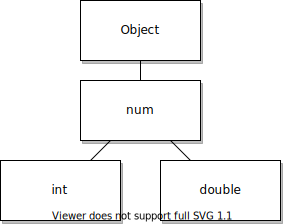

Learning Dart as a Swift developer
- Conventions and linting
- Variables
- Built-in types
- Functions
- Statements
- Collections
- Classes
- Generics
- Concurrency
- Doc comments
- Libraries and visibility
- Next steps
This guide aims to leverage your Swift programming knowledge when learning Dart. It showcases key similarities and differences in both languages, and introduces Dart concepts that aren't present in Swift. As a Swift developer, Dart might feel familiar, as both languages share many concepts.
Both Swift and Dart support sound null safety. Neither language allows variables to be null by default.
Like Swift, Dart has similar support for collections, generics, concurrency (using async/await), and extensions.
Mixins are another concept in Dart that might be new for Swift developers. Like Swift, Dart offers AOT (ahead-of-time) compilation. However, Dart also supports a JIT (just-in-time) compilation mode to aid with various development aspects, such as incremental recompilation or debugging. For more information, check out the Dart overview.
Conventions and linting
#Swift and Dart both have linting tools to enforce standard conventions. However, while Swift has SwiftLint as a standalone tool, Dart has official layout conventions and includes a linter to make compliance effortless. To customize the lint rules for your project, follow the Customizing static analysis instructions. (Note that the IDE plugins for Dart and Flutter also provide this functionality.)
Dart also provides a code formatter, which can automatically format any Dart project when running dart format from the command line or through the IDE.
For more information about Dart conventions and linting, check out Effective Dart and Linter rules.
Variables
#Declaring and initializing variables in Dart is a bit different when compared to Swift. A variable declaration always begins with the variable's type, the var keyword, or the final keyword. As in Swift, Dart supports type inference where the compiler infers the type based on the value assigned to the variable:
// String-typed variable.
String name = 'Bob';
// Immutable String-typed variable.
final String name = 'Bob';
// This is the same as `String name = 'Bob';`
// since Dart infers the type to be String.
var name = 'Bob';
// And this is the same as `final String name = 'Bob';`.
final name = 'Bob';Each Dart statement ends with a semicolon to indicate the end of the statement. You can replace var in Dart with an explicit type. However, by convention, var is recommended when the analyzer can implicitly infer the type.
// Declare a variable first:
String name;
// Initialize the variable later:
name = 'bob';
// Declare and initialize a variable at once with inference:
var name = 'bob';The Swift equivalent of the above Dart code would look as follows:
// Declare a variable first:
var name: String
// Initialize the variable later
name = "bob"
// Declare and initialize a variable at once with inference:
var name = "bob"In Dart, when a variable without an explicit type is initialized after its declaration, its type is inferred as the catch-all dynamic type. Likewise, when a type cannot be automatically inferred, it defaults to the dynamic type, which removes all type-safety. Therefore, the Dart linter discourages this by generating a warning. If you intend to allow a variable to have any type, it's preferred to assign it to Object? rather than dynamic.
For more information, check out the Variables section in the Dart language tour.
Final
#The final keyword in Dart indicates that a variable can be set only once. This is similar to the let keyword in Swift.
In both Dart and Swift, you can only initialize a final variable once, either in the declaration statement or in the initializer list. Any attempt to assign a value a second time results in a compile-time error. Both of the following code snippets are valid, but subsequently setting name results in compilation errors.
final String name;
if (b1) {
name = 'John';
} else {
name = 'Jane';
}let name: String
if (b1) {
name = "John"
} else {
name = "Jane"
}Const
#Besides final, Dart also has the const keyword. One benefit of const is that it's fully evaluated at compile-time and can't be modified during the lifetime of the application.
const bar = 1000000; // Unit of pressure (dynes/cm2)
const double atm = 1.01325 * bar; // Standard atmosphereA const variable defined at a class level needs to be marked as static const.
class StandardAtmosphere {
static const bar = 1000000; // Unit of pressure (dynes/cm2)
static const double atm = 1.01325 * bar; // Standard atmosphere
}The const keyword isn't just for declaring constant variables; it can also be used to create constant values:
var foo = const ['one', 'two', 'three'];
foo.add('four'); // Error: foo contains a constant value.
foo = ['apple', 'pear']; // This is allowed as foo itself isn't constant.
foo.add('orange'); // Allowed as foo no longer contains a constant value.In the above example, you can't change the const value (add, update, or remove the elements in the given list), but you can assign a new value to foo. After foo is assigned a new (non-constant) list, you can add, update, or remove the contents of the list.
You can also assign a constant value to a final field. You can't use the final field in a constant context, but you can use the constant. For example:
final foo1 = const [1, 2, 3];
const foo2 = [1, 2, 3]; // Equivalent to `const [1, 2, 3]`
const bar2 = foo2; // OK
const bar1 = foo1; // Compile-time error, `foo1` isn't constantYou can also define const constructors, making those classes immutable (unchanging) and making it possible to create instances of those classes as compile-time constants. For more information, check out const constructors.
Built-in types
#Dart includes a number of types in the platform libraries, such as:
- Basic value types like
- Numbers (
num,int,double) - Strings (
String) - Booleans (
bool) - The value null (
Null)
- Numbers (
- Collections
- Lists/arrays (
List) - Sets (
Set) - Maps/dictionaries (
Map)
- Lists/arrays (
For more information, check out Built-in types in the Dart language tour.
Numbers
#Dart defines three numeric types for holding numbers:
num- A generic 64-bit number type.
int- A platform-dependent integer number. In native code, it's a 64-bit two's complement integer. On the web, it's a non-fractional 64-bit, floating-point number.
double- A 64-bit floating point number.
Unlike Swift, there are no specific types for unsigned integers.
All these types are also classes in the Dart API. Both the int and double types share num as their parent class:

As number values are technically class instances, they have the convenience of exposing their own utility functions. Because of this, a int can, for example, be turned into a double as follows:
int intVariable = 3;
double doubleVariable = intVariable.toDouble();The same is accomplished in Swift using the specialized initializer:
var intVariable: Int = 3
var doubleVariable: Double = Double(intVariable)In the case of literal values, Dart automatically converts the integer literal into a double value. The following code is perfectly fine:
double doubleValue = 3;Unlike Swift, in Dart you can compare an integer value to a double using the equality (==) operator, as shown below:
int intVariable = 3;
double doubleVariable = 3.0;
print(intVariable == doubleVariable); // trueThis code prints true. However, in Dart the underlying implementation numbers is different between the web and native platforms. The Numbers in Dart page details these differences and shows how to write code so the differences don't matter.
Strings
#As with Swift, Dart represents a series of characters using the String type, though Dart doesn't support a Character type representing one character. A String can be defined with either single or double quotes, however, single quotes are preferred.
String c = 'a'; // There isn't a specialized "Character" type
String s1 = 'This is a String';
String s2 = "This is also a String";let c: Character = "a"
let s1: String = "This is a String"
let s2: String = "This is also a String"Escaping special characters
#Escaping special characters in Dart is similar to Swift (and most other languages). To include special characters escape them using the backslash character.
The following code shows some examples:
final singleQuotes = 'I\'m learning Dart'; // I'm learning Dart
final doubleQuotes = "Escaping the \" character"; // Escaping the " character
final unicode = '\u{1F60E}'; // , Unicode scalar U+1F60ENote that 4-digit hexadecimal values can also be used directly (for example, \u2665), however, curly braces also work. For more information on working with unicode characters, check out Runes and grapheme clusters in the Dart language tour.
String concatenation and multiline declaration
#In both Dart and Swift, you can escape the line breaks in a multiline string, which allows you to keep your source code easier to read but still output the String in a single line. Dart has several ways to define multiline strings:
Using implicit string concatenation: Any neighboring string literals are automatically concatenated, even when spread over multiple lines:
dartfinal s1 = 'String ' 'concatenation' " even works over line breaks.";Using a multiline string literal: When using three quotation marks (either single or double) on either side of the string, the literal is allowed to span multiple lines:
dartfinal s2 = '''You can create multiline strings like this one.'''; final s3 = """This is also a multiline string.""";Dart also supports concatenating strings using the
+operator. This works with both string literals and string variables:dartfinal name = 'John'; final greeting = 'Hello ' + name + '!';
String interpolation
#Insert expressions into the string literal using the ${<expression>} syntax. Dart expands on this by allowing the curly braces to be omitted when the expression is a single identifier:
var food = 'bread';
var str = 'I eat $food'; // I eat bread
var str = 'I eat ${bakery.bestSeller}'; // I eat breadIn Swift, you can achieve the same result by surrounding the variable or expression with parentheses and prefixing with a backslash:
let s = "string interpolation"
let c = "Swift has \(s), which is very handy."Raw strings
#As in Swift, you can define raw strings in Dart. A raw string ignores the escape character and includes any special characters present in the string. You can do this in Dart by prefixing the string literal with the letter r, as shown in the following example.
// Include the \n characters.
final s1 = r'Includes the \n characters.';
// Also includes the \n characters.
final s2 = r"Also includes the \n characters.";
final s3 = r'''
The \n characters are also included
when using raw multiline strings.
''';
final s4 = r"""
The \n characters are also included
when using raw multiline strings.
""";let s1 = #"Includes the \n characters."#
let s2 = #"""
The \n characters are also included
when using raw multiline strings.
"""#Equality
#As in Swift, Dart's equality operator (==) compares whether two strings are equal. Two strings are equal if they contain the same sequence of code units.
final s1 = 'String '
'concatenation'
" works even over line breaks.";
assert(s1 ==
'String concatenation works even over '
'line breaks.');Commonly used API
#Dart offers several common API for strings. For example, both Dart and Swift allow you to check if a string is empty with isEmpty. There are other convenience methods, such as toUpperCase and toLowerCase. For more information, check out Strings in the Dart language tour.
Booleans
#Booleans represent a binary value in both Dart (bool) and Swift (Bool).
Null safety
#Dart enforces sound null safety. By default, types don't allow a null value unless marked as nullable. Dart indicates this with a question mark (?) at the end of the type. This works like Swift's optionals.
Null-aware operators
#Dart supports several operators to deal with nullability. The null coalescing operator (??), and optional chaining operator (?.) are available in Dart and operate the same as in Swift:
a = a ?? b;let str: String? = nil
let count = str?.count ?? 0In addition, Dart offers a null safe version of the cascade operator (?..). This operator ignores any operations when the target expression resolves to null. Dart also offers the null assignment operator (??=), which Swift doesn't. If a variable with a nullable type has a current value of null, this operator assigns a value to that variable. Expressed as a ??= b;, it serves as shorthand for the following:
a = a ?? b;
// Assign b to a if a is null; otherwise, a stays the same
a ??= b;a = a ?? b! Operator (also called "force unwrap")
#In cases where it's safe to assume that a nullable variable or expression is, in fact, non-null, it's possible to tell the compiler to repress any compile-time errors. This is done using the suffix ! operator, by placing it as a suffix to the expression. (Don't confuse this with Dart's "not" operator, which uses the same symbol):
int? a = 5;
int b = a; // Not allowed.
int b = a!; // Allowed.At runtime, if a turns out to be null, a runtime error occurs.
Like the ?. operator, use the ! operator when accessing properties or methods on an object:
myObject!.someProperty;
myObject!.someMethod();If myObject is null at runtime, a runtime error occurs.
Late fields
#The late keyword can be assigned to class fields to indicate they are initialized at a later point, while remaining non-nullable. This is similar to Swift's "implicitly unwrapped optionals." This is useful for cases where a variable is never observed before being initialized, allowing it to be initialized later. A non-nullable late field can't have null assigned at a later point. Also, a non-nullable late field throws a runtime error when observed before being initialized, a scenario you want to avoid in a well-behaved app.
// Using null safety:
class Coffee {
late String _temperature;
void heat() { _temperature = 'hot'; }
void chill() { _temperature = 'iced'; }
String serve() => _temperature + ' coffee';
}In this case, _temperature is only initialized after calling heat() or chill(). If serve() is called before the others, a runtime exception occurs. Note that _temperature can't ever be null.
You can also use the late keyword to make initialization lazy when combining it with an initializer:
class Weather {
late int _temperature = _readThermometer();
}In this case, _readThermometer() is only run when the field is first accessed, rather than on initialization.
Another advantage in Dart is using the late keyword to delay initialization of final variables. While you don't have to immediately initialize the final variable when marking it as late, it can still be initialized only once. A second assignment results in a runtime error.
late final int a;
a = 1;
a = 2; // Throws a runtime exception because
// "a" is already initialized.Functions
#Swift uses the main.swift file as an app's entry point. Dart uses the main function as an app's entry point. Every program must have a main function to be executable. For example:
void main() {
// main function is the entry point
print("hello world");
}// main.swift file is the entry point
print("hello world")Dart doesn't support Tuples (though there are several tuple packages available on pub.dev). In the case that a function needs to return multiple values, you can wrap them in a collection, like a list, set, or map, or you can write a wrapper class where an instance can be returned that contains these values. More on this can be found in the sections on collections and classes.
Exception and error handling
#As in Swift, Dart's functions and methods support handling both exceptions and errors. Dart errors typically represent programmer mistakes or system failures like stack overflow. Dart errors aren't supposed to be caught. On the other hand, Dart exceptions represent a recoverable failure, and are intended to be caught. For example, at runtime the code might try to access a streaming feed, but instead receives an exception which, if not caught, results in termination of the app. You can manage exceptions in Dart by wrapping the function call in a try-catch block.
try {
// Create audio player object
audioPlayer = AVAudioPlayer(soundUrl);
// Play the sound
audioPlayer.play();
}
catch {
// Couldn't create audio player object, log the exception
print("Couldn't create the audio player for file $soundFilename");
}Similarly, Swift uses a do-try-catch block. For example:
do {
// Create audio player object
audioPlayer = try AVAudioPlayer(contentsOf: soundURL)
// Play the sound
audioPlayer?.play()
}
catch {
// Couldn't create audio player object, log the error
print("Couldn't create the audio player for file \(soundFilename)")
}You can use the try-catch block in both synchronous and asynchronous Dart code. For more information, see the docs for the Error and Exception classes.
Parameters
#Similar to Swift, Dart supports named parameters in its functions. However, unlike Swift, these aren't the default in Dart. The default parameter type in Dart is a positional parameter.
int multiply(int a, int b) {
return a * b;
}The equivalent in Swift prefaces a parameter with an underscore to remove the need for an argument label.
func multiply(_ a: Int, _ b: Int) -> Int {
return a * b
}When creating named parameters in Dart, define them in a separate block of curly braces, after positional parameters:
int multiply(int a, int b, {int c = 1, int d = 1}) {
return a * b * c * d;
}
// Calling a function with both required and named parameters
multiply(3, 5); // 15
multiply(3, 5, c: 2); // 30
multiply(3, 5, d: 3); // 45
multiply(3, 5, c: 2, d: 3); // 90// The Swift equivalent
func multiply(_ a: Int, _ b: Int, c: Int = 1, d: Int = 1) -> Int {
return a * b * c * d
}Named parameters must include one of the following:
- A default value
- A
?at the end of the type to set the type as nullable - The keyword
requiredbefore the variable type
To learn more about nullable types, check out null safety.
To mark a named parameter as required in Dart, you must prefix it with the required keyword:
int multiply(int a, int b, { required int c }) {
return a * b * c;
}
// When calling the function, c has to be provided
multiply(3, 5, c: 2);A third parameter type is the optional positional parameter. As the name suggests, these are similar to the default positional parameters, but they can be omitted when calling the function. They must be listed after any required positional parameters and can't be used in conjunction with named parameters.
int multiply(int a, int b, [int c = 1, int d = 1]) {
return a * b * c * d;
}
// Calling a function with both required and optional positioned parameters.
multiply(3, 5); // 15
multiply(3, 5, 2); // 30
multiply(3, 5, 2, 3); // 90// The Swift equivalent
func multiply(_ a: Int, _ b: Int, _ c: Int = 1, _ d: Int = 1) -> Int {
return a * b * c * d
}Like named parameters, optional positional parameters must have either a default value or a nullable type.
First-class functions
#As in Swift, Dart functions are also first class citizens, which means they're treated as any other object. For example, the following code shows how to return a function from a function:
typedef int MultiplierFunction(int value);
// Define a function that returns another function
MultiplierFunction multiplyBy(int multiplier) {
return (int value) {
return value * multiplier;
};
}
// Call function that returns new function
MultiplierFunction multiplyByTwo = multiplyBy(2);
// Call the new function
print(multiplyByTwo(3)); // 6// The Swift equivalent of the Dart function below
// Define a function that returns a closure
typealias MultiplierFunction = (Int) -> (Int)
func multiplyBy(_ multiplier: Int) -> MultiplierFunction {
return { $0 * multiplier} // Returns a closure
}
// Call function that returns a function
let multiplyByTwo = multiplyBy(2)
// Call the new function
print(multiplyByTwo(3)) // 6Anonymous functions
#Anonymous functions in Dart work almost identically to closures in Swift, save for a difference in syntax. As with named functions, you can pass anonymous functions like any other value. For example, you can store anonymous functions in a variable, pass them as an argument to another function, or return them from another function.
Dart has two ways to declare anonymous functions. The first, with curly braces, works like any other function. It allows you to use multiple lines, and it needs a return statement for any value to be returned.
// Multi line anonymous function
[1,2,3].map((element) {
return element * 2;
}).toList(); // [2, 4, 6] // Swift equivalent anonymous function
[1, 2, 3].map { $0 * 2 }The other method uses an arrow function, named after the arrow-like symbol used in its syntax. You can use this shorthand syntax when your function body contains only a single expression and where the value is returned. This omits the need for any braces or a return statement, as these are implied.
// Single-line anonymous function
[1,2,3].map((element) => element * 2).toList(); // [2, 4, 6]The choice between the arrow syntax or curly braces is available for any function, not just anonymous functions.
multiply(int a, int b) => a * b;
multiply(int a, int b) {
return a * b;
}Generator functions
#Dart supports generator functions that return an iterable collection of items that are built lazily. Add items to the final iterable using the yield keyword, or add whole collections of items using yield*.
The following example shows how to write a basic generator function:
Iterable<int> listNumbers(int n) sync* {
int k = 0;
while (k < n) yield k++;
}
// Returns an `Iterable<int>` that iterates
// through 0, 1, 2, 3, and 4.
print(listNumbers(5));
Iterable<int> doubleNumbersTo(int n) sync* {
int k = 0;
while (k < n) {
yield* [k, k];
k++;
}
}
print(doubleNumbersTo(3)); // Returns an iterable with [0, 0], [1, 1], and [2, 2].This is an example of a synchronous generator function. You can also define asynchronous generator functions, which return streams instead of iterables. Learn more in the Concurrency section.
Statements
#This section covers the similarities and differences in statements between Dart and Swift.
Control flow (if/else, for, while, switch)
#All control flow statements in Dart work similarly to their Swift counterparts, save for a few differences in syntax.
if
#Unlike Swift, the if statement in Dart requires parentheses around the condition. While the Dart style guide recommends using curly braces around flow control statements (as shown below), when you have an if statement with no else clause and the whole if statement fits on one line, you can omit the braces if you prefer.
var a = 1;
// Parentheses for conditions are required in Dart.
if (a == 1) {
print('a == 1');
} else if (a == 2) {
print('a == 2');
} else {
print('a != 1 && a != 2');
}
// Curly braces are optional for single line `if` statements.
if (a == 1) print('a == 1');let a = 1;
if a == 1 {
print("a == 1")
} else if a == 2 {
print("a == 2")
} else {
print("a != 1 && a != 2")
}for(-in)
#In Swift, the for loop is only used to loop over collections. To loop over a chunk of code multiple times, Swift allows you to loop over a range. Dart doesn't support syntax for defining ranges, but includes a standard for loop, in addition to for-in that loops over collections.
Dart's for-in loop works like its Swift counterpart, and it can loop over any value that is an Iterable, as in the List example below:
var list = [0, 1, 2, 3, 4];
for (var i in list) {
print(i);
}let array = [0, 1, 2, 3, 4]
for i in array {
print(i)
}Dart doesn't have any special syntax with for-in loops that allow you to loop over maps, like Swift has for dictionaries. To achieve a similar effect, you can extract the map's entries as an Iterable type. Alternatively, you can use Map.forEach:
Map<String, int> dict = {
'Foo': 1,
'Bar': 2
};
for (var e in dict.entries) {
print('${e.key}, ${e.value}');
}
dict.forEach((key, value) {
print('$key, $value');
});var dict:[String:Int] = [
"Foo":1,
"Bar":2
]
for (key, value) in dict {
print("\(key),\(value)")
}Operators
#Unlike Swift, Dart doesn't allow the addition of new operators, but it does allow you to overload existing operators with the operator keyword. For example:
class Vector {
final double x;
final double y;
final double z;
Vector operator +(Vector v) {
return Vector(x: x + v.x, y: y + v.y, z: z+v.z);
}
}struct Vector {
let x: Double
let y: Double
let z: Double
}
func +(lhs: Vector, rhs: Vector) -> Vector {
return Vector(x: lhs.x + rhs.x, y: lhs.y + rhs.y, z: lhs.z + rhs.z)
}
...Arithmetic operators
#For the most part, arithmetic operators behave the same in Swift and Dart, with the notable exception of the divide operator (/). In Swift (and many other programming languages), the result of let x = 5/2 is 2 (an integer). In Dart, int x = 5/2, results in a value of 2.5 (a floating point value). To get an integer result, use Dart's truncating division operator (~/).
While the ++ and operators existed in earlier versions of Swift, they've been removed in Swift 3.0. The Dart equivalents operate the same way. For example:
assert(2 + 3 == 5);
assert(2 - 3 == -1);
assert(2 * 3 == 6);
assert(5 / 2 == 2.5); // Result is a double
assert(5 ~/ 2 == 2); // Result is an int
assert(5 % 2 == 1); // Remainder
a = 0;
b = ++a; // Increment a before b gets its value.
assert(a == b); // 1 == 1
a = 0;
b = a++; // Increment a AFTER b gets its value.
assert(a != b); // 1 != 0Type test operators
#The implementation of test operators is a bit different between the two languages.
| Meaning | Dart operator | Swift equivalent |
|---|---|---|
| Typecast (description below) | expr as T | expr as! T expr as? T |
| True if the object has the specified type | expr is T | expr is T |
| True if the object doesn't have the specified type | expr is! T | !(expr is T) |
The result of obj is T is true if obj is a subtype of the type specified by T. For example, obj is Object? is always true.
Use the typecast operator to cast an object to a particular typeif and only ifyou're sure that the object is of that type. For example:
(person as Employee).employeeNumber = 4204583;Dart has only the single-type casting operator, which acts like Swift's as! operator. There's no equivalent for Swift's as? operator.
(person as! Employee).employeeNumber = 4204583;If you aren't sure that the object is of type T, then use is T to check before using the object.
In Dart, type promotion updates the types of local variables within the scope of the if statement. This also happens for null checks. Promotion only applies to local variables, not to instance variables.
if (person is Employee) {
person.employeeNumber = 4204583;
}// Swift requires the variable to be cast.
if let person = person as? Employee {
print(person.employeeNumber)
}Logical operators
#The logical operators (such as AND (&&), OR (||) and NOT (!)) are identical in both languages. For example:
if (!done && (col == 0 || col == 3)) {
// ...Do something...
}Bitwise and shift operators
#The bitwise operators are mostly identical in both languages.
For example:
final value = 0x22;
final bitmask = 0x0f;
assert((value & bitmask) == 0x02); // AND
assert((value & ~bitmask) == 0x20); // AND NOT
assert((value | bitmask) == 0x2f); // OR
assert((value ^ bitmask) == 0x2d); // XOR
assert((value << 4) == 0x220); // Shift left
assert((value >> 4) == 0x02); // Shift right
assert((-value >> 4) == -0x03); // Shift right // Result may differ on the webConditional operator
#Both Dart and Swift contain a conditional operator (?:) for evaluating expressions that might otherwise require if-else statements:
final displayLabel = canAfford ? 'Please pay below' : 'Insufficient funds';let displayLabel = canAfford ? "Please pay below" : "Insufficient funds"Cascades (.. operator)
#Unlike Swift, Dart supports cascading with the cascading operator. This allows you to chain multiple method calls or property assignments on a single object.
The following example shows setting the value of multiple properties, then calling multiple methods on a newly constructed object, all within a single chain using the cascade operator:
Animal animal = Animal()
..name = 'Bob'
..age = 5
..feed()
..walk();
print(animal.name); // "Bob"
print(animal.age); // 5var animal = Animal()
animal.name = "Bob"
animal.age = 5
animal.feed()
animal.walk()
print(animal.name)
print(animal.age)Collections
#This section covers some collection types in Swift and how they compare to their equivalents in Dart.
Lists
#List literals are defined the same way in Dart as arrays are in Swift, using square brackets and separated by commas. The syntax between the two languages is very similar, however there are some subtle differences, shown in the following example:
final List<String> list1 = <String>['one', 'two', 'three']; // Initialize list and specify full type
final list2 = <String>['one', 'two', 'three']; // Initialize list using shorthand type
final list3 = ['one', 'two', 'three']; // Dart can also infer the typevar list1: Array<String> = ["one", "two", "three"] // Initialize array and specify the full type
var list2: [String] = ["one", "two", "three"] // Initialize array using shorthand type
var list3 = ["one", "two", "three"] // Swift can also infer the typeThe following code samples give an overview of the basic actions that you can perform on a Dart List. The first example shows how to retrieve a value from a list using the index operator:
final fruits = ['apple', 'orange', 'pear'];
final fruit = fruits[1];To add a value to the back of the list, use the add method. To add another List use the addAll method:
final fruits = ['apple', 'orange', 'pear'];
fruits.add('peach');
fruits.addAll(['kiwi', 'mango']);For the complete List API, refer to the List class documentation.
Unmodifiable
#Assigning an array to a constant (let in Swift) makes the array immutable, meaning its size and content can't be changed. You also can't assign a new array to a constant.
In Dart, this works a little differently and, depending on your needs, you have several options to choose from:
- If the list is a compile-time constant and shouldn't be modified, use the
constkeyword:const fruits = ['apple', 'orange', 'pear']; - Assign the list to a
finalfield. This means that the list itself doesn't have to be a compile-time constant and ensures that the field can't be overridden with another list. However, it still allows the size or the contents of the list to be modified:final fruits = ['apple', 'orange', 'pear']; - Create a
final Listusing the unmodifiable constructor (shown in the following example). This creates aListthat can't change its size or content, making it behave just like a constantArrayin Swift.
final fruits = List<String>.unmodifiable(['apple', 'orange', 'pear']);let fruits = ["apple", "orange", "pear"]Spread operators
#Another useful feature in Dart is the spread operator (...) and the null-aware spread operator (...?), which provide a concise way to insert multiple values into a collection.
For example, you can use the spread operator (...) to insert all the values of a list into another list, as shown below:
final list = [1, 2, 3];
final list2 = [0, ...list]; // [ 0, 1, 2, 3 ]
assert(list2.length == 4);Though Swift has no spread operator, the equivalent to line 2 above would be the following:
let list2 = [0] + listIf the expression to the right of the spread operator might be null, you can avoid exceptions by using a null-aware spread operator (...?):
List<int>? list;
final list2 = [0, ...?list]; //[ 0 ]
assert(list2.length == 1);let list2 = [0] + list ?? []Sets
#Both Dart and Swift support defining Sets with literals. Sets are defined in the same way as lists, but using curly braces instead of square brackets. Sets are unordered collections that only contain unique items. The uniqueness of these items is implemented using hash codes, meaning that objects need hash values to be stored in a Set. Every Dart object contains a hash code, while in Swift you need to explicitly apply the Hashable protocol before the object can be stored in a Set.
The following code snippets show the differences between initializing a Set in Dart and Swift:
final abc = {'a', 'b', 'c'};var abc: Set<String> = ["a", "b", "c"]You don't create an empty set in Dart by specifying empty curly braces ({}); this results in creating an empty Map. To create an empty Set, precede the {} declaration with a type argument or assign {} to a variable of type Set:
final names = <String>{};
Set<String> alsoNames = {}; // This works, too.
// final names = {}; // Creates an empty map, not a set.Unmodifiable
#Similar to List, Set also has an unmodifiable version. For example:
final abc = Set<String>.unmodifiable(['a', 'b', 'c']);let abc: Set<String> = ["a", "b", "c"]Maps
#The Map type in Dart can be compared with the Dictionary type in Swift. Both types associate keys and values. These keys and values can be any type of object. Each key occurs only once, but you can use the same value multiple times.
In both languages, the dictionary is based on a hash table, which means that keys need to be hashable. In Dart, every object contains a hash while in Swift you need to explicitly apply the Hashable protocol before the object can be stored in a Dictionary.
Here are a couple of simple Map and Dictionary examples, created using literals:
final gifts = {
'first': 'partridge',
'second': 'turtle doves',
'fifth': 'golden rings',
};
final nobleGases = {
2: 'helium',
10: 'neon',
18: 'argon',
};let gifts = [
"first": "partridge",
"second": "turtle doves",
"fifth": "golden rings",
]
let nobleGases = [
2: "helium",
10: "neon",
18: "argon",
]The following code samples provide an overview of the basic actions that you can perform on a Dart Map. The first example shows how to retrieve a value from a Map using the key operator:
final gifts = {'first': 'partridge'};
final gift = gifts['first']; // 'partridge'Use the containsKey method to check whether a key is already present in the Map:
final gifts = {'first': 'partridge'};
assert(gifts.containsKey('fifth')); // falseUse the index assignment operator ([]=) to add or update an entry in the Map. If the Map doesn't contain the key yet, the entry is added. If the key is present, the entry's value is updated:
final gifts = {'first': 'partridge'};
gifts['second'] = 'turtle'; // Gets added
gifts['second'] = 'turtle doves'; // Gets updatedTo remove an entry from the Map use the remove method, and to remove all entries that satisfy a given test use the removeWhere method:
final gifts = {'first': 'partridge'};
gifts.remove('first');
gifts.removeWhere((key, value) => value == 'partridge');Classes
#Dart doesn't define an interface typeany class can be used as an interface. If you want to introduce just an interface, create an abstract class with no concrete members. To get a more detailed understanding of these categories, check out the documentation in the abstract classes, implicit interfaces, and extending a class sections.
Dart doesn't provide support for value types. As mentioned in the Built-in types section, all types in Dart are reference types (even primitives), meaning that Dart doesn't provide a struct keyword.
Enums
#Enumerated types, often called enumerations or enums, are a special kind of class used to represent a fixed number of constant values. Enums have been part of the Dart language for a long time, but Dart 2.17 added enhanced enums support for members. That means you can add fields holding state, constructors that set that state, methods with functionality, and even override existing members. For more information, check out Declaring enhanced enums in the Dart language tour.
Constructors
#Dart's class constructors work similarly to class initializers in Swift. However, in Dart, they offer more functionality for setting class properties.
Standard constructor
#A standard class constructor looks very similar to a Swift initializer, both in declaring it and calling it. Rather than the init keyword, Dart uses the full class name. The new keyword, once required for creating new class instances, is now optional and no longer recommended.
class Point {
double x = 0;
double y = 0;
Point(double x, double y) {
// There's a better way to do this in Dart, stay tuned.
this.x = x;
this.y = y;
}
}
// Create a new instance of the Point class
Point p = Point(3, 5);Constructor parameters
#Since writing code to assign all class fields in the constructor is often quite redundant, Dart has some syntactic sugar to make this easier:
class Point {
double x;
double y;
// Syntactic sugar for setting x and y
// before the constructor body runs.
Point(this.x, this.y);
}
// Create a new instance of the Point class
Point p = Point(3, 5);Similar to functions, constructors can also take optional positional or named parameters:
class Point {
...
// With an optional positioned parameter
Point(this.x, [this.y = 0]);
// With named parameters
Point({required this.y, this.x = 0});
// With both positional and named parameters
Point(int x, int y, {int scale = 1}) {
...
}
...
}Initializer lists
#You can also use initializer lists, which run after any fields that are directly set using this in the constructor parameters, but still before the constructor body:
class Point {
...
Point(Map<String, double> json)
: x = json['x']!,
y = json['y']! {
print('In Point.fromJson(): ($x, $y)');
}
...
}An initializer list is a good place to use an assert.
Named constructors
#Unlike Swift, Dart allows classes to have multiple constructors by allowing you to name them. You have the option of using one unnamed constructor, but any additional constructors must be named. A class can also have only named constructors.
class Point {
double x;
double y;
Point(this.x, this.y);
// Named constructor
Point.fromJson(Map<String, double> json)
: x = json['x']!,
y = json['y']!;
}Const constructors
#When your class instances are always immutable (unchanging), you can enforce this by adding a const constructor. Removing a const constructor is a breaking change for those who use your class, so employ this feature judiciously. Defining a constructor as const makes the class unmodifiable: all non-static fields in the class must be flagged as final.
class ImmutablePoint {
final double x, y;
const ImmutablePoint(this.x, this.y);
}This also means you can use that class as a constant value, making the object a compile-time constant:
const ImmutablePoint origin = ImmutablePoint(0, 0);Constructor redirection
#You can call constructors from other constructors, for example, to prevent code duplication or to add additional defaults for parameters:
class Point {
double x, y;
// The main constructor for this class.
Point(this.x, this.y);
// Delegates to the main constructor.
Point.alongXAxis(double x) : this(x, 0);
}Factory constructors
#You can use factory constructors when you don't need to create a new class instance. One example is if a cached instance could be returned instead:
class Logger {
static final Map<String, Logger> _cache =
<String, Logger>{};
final String name;
// Factory constructor that returns a cached copy,
// or creates a new one if it's not yet available.
factory Logger(String name)=> _cache[name] ??= Logger._internal(name);
// Private constructor used only in this library
Logger._internal(this.name);
}Methods
#In both Dart and Swift, methods are functions that provide behavior for an object.
void doSomething() { // This is a function
// Implementation..
}
class Example {
void doSomething() { // This is a method
// Implementation..
}
}func doSomething() { // This is a function
// Implementation..
}
class Example {
func doSomething() { // This is a method
// Implementation..
}
}Getters and setters
#You can define getters and setters by prefixing a field name with a get or set keyword. You might recall that each instance field has an implicit getter, plus a setter if appropriate. In Swift, the syntax is a little different, as the get and set keywords need to be defined inside of a property statement and can only be defined as a statement, not as an expression:
class Rectangle {
double left, top, width, height;
Rectangle(this.left, this.top, this.width, this.height);
// Define two calculated properties: right and bottom.
double get right => left + width;
set right(double value) => width = value - left;
double get bottom => top + height;
set bottom(double value) => height = value - top;
}class Rectangle {
var left, top, width, height: Double;
init(left: Double, top: Double, width: Double, height: Double) {
self.left = left
self.top = top
self.width = width
self.height = height
}
// Define two calculated properties: right and bottom.
var right: Double {
get {
return left + width
}
set { width = newValue - left }
}
var bottom: Double {
get {
return top + height
}
set { height = newValue - top }
}
}Abstract classes
#Dart has the concept of abstract classes, something that isn't supported by Swift. Abstract classes can't be instantiated directly and can only be subclassed. This makes abstract classes useful to define interfaces (comparable to a protocol in Swift).
Abstract classes often contain abstract methods, which are method declarations that don't have an implementation. Non-abstract subclasses are forced to override these methods and provide an appropriate implementation. An abstract class can also contain methods with a default implementation. Subclasses inherit this implementation if they don't override these methods when extending the abstract class.
To define an abstract class, use the abstract modifier. The following example declares an abstract class that has an abstract method and a method containing a default implementation:
// This class is declared abstract and thus can't be instantiated.
abstract class AbstractContainer {
void updateChildren(); // Abstract method.
// Method with default implementation.
String toString() => "AbstractContainer";
}Implicit interfaces
#In the Dart language, every class implicitly defines an interface containing all the instance members of the class and of any interface it implements. If you want to create a class A that supports class B's API without inheriting B's implementation, class A should implement the B interface.
Unlike Dart, Swift classes don't implicitly define an interface. The interface needs to be explicitly defined as a protocol and implemented by the developer.
A class can implement one or more interfaces and then provide the APIs required by the interfaces. Both Dart and Swift have a different ways of implementing interfaces. For example:
abstract class Animal {
int getLegs();
void makeNoise();
}
class Dog implements Animal {
@override
int getLegs() => 4;
@override
void makeNoise() => print('Woof woof');
}protocol Animal {
func getLegs() -> Int;
func makeNoise()
}
class Dog: Animal {
func getLegs() -> Int {
return 4;
}
func makeNoise() {
print("Woof woof");
}
}Extending a class
#Class inheritance in Dart is very similar to Swift. In Dart, you can use extends to create a subclass, and super to refer to the superclass:
abstract class Animal {
// Define constructors, fields, methods...
}
class Dog extends Animal {
// Define constructors, fields, methods...
}class Animal {
// Define constructors, fields, methods...
}
class Dog: Animal {
// Define constructors, fields, methods...
}Mixins
#Mixins allow your code to share functionality between classes. You can use the mixin's fields and methods in a class, using their functionality as if it were part of the class. A class can use multiple mixinswhich is useful when multiple classes share the same functionalitywithout needing to inherit from each other or share a common ancestor.
While Swift doesn't support mixins, it can approximate this functionality if you write a protocol together with an extension that provides default implementations for the methods specified in the protocol. The main issue with this approach is that, unlike in Dart, these protocol extensions don't maintain their own state.
You can declare a mixin just like a regular class, as long as it doesn't extend any class other than Object and has no constructors. Use the with keyword to add one or more comma-separated mixins to a class.
The following example shows how this behavior is achieved in Dart, and how similar behavior is replicated in Swift:
abstract class Animal {}
// Defining the mixins
mixin Flyer {
fly() => print('Flaps wings');
}
mixin Walker {
walk() => print('Walks legs');
}
class Bat extends Animal with Flyer {}
class Goose extends Animal with Flyer, Walker {}
class Dog extends Animal with Walker {}
// Correct calls
Bat().fly();
Goose().fly();
Goose().walk();
Dog().walk();
// Incorrect calls
Bat().walk(); // Not using the Walker mixin
Dog().fly(); // Not using the Flyer mixin
class Animal {
}// Defining the "mixins"
protocol Flyer {
func fly()
}
extension Flyer {
func fly() {
print("Flaps wings")
}
}
protocol Walker {
func walk()
}
extension Walker {
func walk() {
print("Walks legs")
}
}
class Bat: Animal, Flyer {}
class Goose: Animal, Flyer, Walker {}
class Dog: Animal, Walker {}
// Correct calls
Bat().fly();
Goose().fly();
Goose().walk();
Dog().walk();
// Incorrect calls
Bat().walk(); // `bat` doesn't have the `walk` method
Dog().fly(); // "dog" doesn't have the `fly` methodReplacing the class keyword with mixin prevents the mixin from being used as a regular class.
mixin Walker {
walk() => print('Walks legs');
}
// Impossible, as Walker is no longer a class.
class Bat extends Walker {}Since you can use multiple mixins, their methods or fields can overlap with each other when used on the same class. They can even overlap with the class that uses them, or that class's superclass. To work around this, Dart stacks them on top of each other, so the order in which they are added to a class matters.
To give an example:
class Bird extends Animal with Consumer, Flyer {When a method is called on an instance of Bird, Dart starts at the bottom of the stack with its own class, Bird, which takes precedence over other implementations. If Bird has no implementation, then Dart keeps moving up the stack, with Flyer next, followed by Consumer, until an implementation is found. If no implementation is found, the parent class, Animal, is checked last.
Extension methods
#Like Swift, Dart offers extension methods that allow you to add functionalityspecifically, methods, getters, setters, and operatorsto existing types. The syntax in both Dart and Swift for creating an extension looks very similar:
extension <name> on <type> {
(<member definition>)*
}extension <type> {
(<member definition>)*
}As an example, the following extension on the String class from the Dart SDK allows parsing of integers:
extension NumberParsing on String {
int parseInt() {
return int.parse(this);
}
}
print('21'.parseInt() * 2); // 42extension String {
func parseInt() -> Int {
return Int(self) ?? 0
}
}
print("21".parseInt() * 2) // 42Although extensions are similar in Dart and Swift, there are some key differences. The following sections cover the most important differences, but check out Extension methods for a complete overview.
Named extensions
#Although not mandatory, you can name an extension in Dart. Naming an extension allows you to control its scopemeaning it's possible to either hide or show the extension in case it conflicts with another library. If the name begins with an underscore, the extension is only available within the library in which it's defined.
// Hide "MyExtension" when importing types from
// "path/to/file.dart".
import 'path/to/file.dart' hide MyExtension;
// Only show "MyExtension" when importing types
// from "path/to/file.dart".
import 'path/to/file.dart' show MyExtension;
// The `shout()` method is only available within this library.
extension _Private on String {
String shout() => this.toUpperCase();
}Initializers
#In Swift, you can use extensions to add new convenience initializers to a type. In Dart, you can't use extensions to add additional constructors to a class, but you can add a static extension method that creates an instance of the type. Consider the following example:
class Person {
Person(this.fullName);
final String fullName;
}
extension ExtendedPerson on Person {
static Person create(String firstName, String lastName) {
return Person("$firstName $lastName");
}
}
// To use the factory method, use the name of
// the extension, not the type.
final person = ExtendedPerson.create('John', 'Doe');Overriding members
#Overriding instance methods (including operators, getters, and setters), is also very similar between the two languages. In Dart, you can use the @override annotation to indicate that you are intentionally overriding a member:
class Animal {
void makeNoise => print('Noise');
}
class Dog implements Animal {
@override
void makeNoise() => print('Woof woof');
}In Swift, you add the override keyword to the method definition:
class Animal {
func makeNoise() {
print("Noise")
}
}
class Dog: Animal {
override func makeNoise() {
print("Woof woof");
}
}Generics
#As in Swift, Dart supports the use of generics to improve type safety or reduce code duplication.
Generic methods
#You can apply generics to methods. To define a generic type, place it between < > symbols after the method name. This type can then be used within the method (as the return type), or in the method's parameters:
// Defining a method that uses generics.
T transform<T>(T param) {
// For example, doing some transformation on `param`...
return param;
}
// Calling the method. Variable "str" will be
// of type String.
var str = transform('string value');In this case, passing String to the transform method ensures that it returns a String. Likewise, if an int is provided, the return value is an int.
Define multiple generics by separating them with a comma:
// Defining a method with multiple generics.
T transform<T, Q>(T param1, Q param2) {
// ...
}
// Calling the method with explicitly-defined types.
transform<int, String>(5, 'string value');
// Types are optional when they can be inferred.
transform(5, 'string value');Generic classes
#Generics can also be applied to classes. You can specify the type when calling a constructor, which allows you to tailor reusable classes to specific types.
In the following example, the Cache class is for caching specific types:
class Cache<T> {
T getByKey(String key) {}
void setByKey(String key, T value) {}
}
// Creating a cache for strings.
// stringCache has type Cache<String>
var stringCache = Cache<String>();
// Valid, setting a string value.
stringCache.setByKey('Foo', 'Bar')
// Invalid, int type doesn't match generic.
stringCache.setByKey('Baz', 5)If the type declaration is omitted, the runtime type is Cache<dynamic> and both calls to setByKey are valid.
Restricting generics
#You can use generics to restrict your code to a family of types using extends. This ensures that your class is instantiated with a generic type that extends a specific type (and is similar to Swift):
class NumberManager<T extends num> {
// ...
}
// Valid
var manager = NumberManager<int>();
var manager = NumberManager<double>();
// Invalid, neither String nor its parent classes extend num.
var manager = NumberManager<String>();Generics in literals
#Map-, Set-, and List- literals can explicitly declare generic types, which is useful when the type isn't inferred or is incorrectly inferred.
For example, the List class has a generic definition: class List<E>. Generic type E refers to the type of the list's contents. Normally, this type is automatically inferred, which is used in some membery types of the List class's. (For example, its first getter returns a value of type E). When defining a List literal, you can explicitly define the generic type as follows:
var objList = [5, 2.0]; // Type: List<num> // Automatic type inference
var objList = <Object>[5, 2.0]; // Type: List<Object> // Explicit type definition
var objSet = <Object>{5, 2.0}; // Sets work identicallyThis is also true for a Map, which also define its key and value types using generics (class Map<K, V>):
// Automatic type inference
var map = {
'foo': 'bar'
}; // Type: Map<String, String>
// Explicit type definition:
var map = <String, Object>{
'foo': 'bar'
}; // Type: Map<String, Object>Concurrency
#Swift supports multithreading and Dart supports isolates, which are similar to lightweight threads and won't be covered here. Each isolate has its own event loop. For more information, see How isolates work.
Futures
#Vanilla Swift doesn't have a counterpart to Dart's Future. However, you might still know this object if you are familiar with Apple's Combine framework, or third party libraries like RxSwift or PromiseKit.
In a nutshell, a future represents the result of an asynchronous operation, which becomes available at a later time. If you have a function that returns a Future of a String (Future<String>) rather than just a String, you are basically receiving a value that might exist some time laterin the future.
When a future's asynchronous operation completes, the value becomes available. You should keep in mind, however, that a future can also complete with an error instead of a value.
An example of this would be if you made an HTTP request, and immediately received a future as the response. Once the result comes in, the future completes with that value. However, if the HTTP request fails, say because the internet connection was interrupted, the future completes with an error instead.
Futures can be created manually, too. The easiest way to create a future is by defining and calling an async function, which is discussed in the next section. When you have a value that needs to be a Future, you can easily turn it into one using the Future class:
String str = 'String Value';
Future<String> strFuture = Future<String>.value(str);Async/await
#While futures aren't part of vanilla Swift, the async/await syntax in Dart has a Swift counterpart, and works in a similar way, though without Future objects.
As in Swift, functions can be marked as async. The difference in Dart is that any async function always implicitly returns a Future. For example, if your function returns a String, the async counterpart to this function returns a Future<String>.
The throws keyword that's placed after the async keyword in Swift (but only if the function is throwable), doesn't exist in Dart's syntax because Dart exceptions and errors aren't checked by the compiler. Rather, if an exception occurs in an async function, the returned Future fails with the exception, which can then be appropriately handled.
// Returns a future of a string, as the method is async
Future<String> fetchString() async {
// Typically some other async operations would be done here.
Response response = await makeNetworkRequest();
if (!response.success) {
throw BadNetwork();
}
return 'String Value';
}This async function can then be called as follows:
String stringFuture = await fetchString();
print(str); // "String Value"The equivalent async function in Swift:
func fetchString() async throws -> String {
// Typically some other async operations would be done here.
let response = makeNetworkRequest()
if !response.success {
throw BadNetwork()
}
return "String Value"
}Similarly, any exception that occurs in the async function can be handled in the same way as handling a failed Future, using the catchError method.
In Swift, an async function can't be invoked from a non-async context. In Dart, you are allowed to do so, but you must handle the resulting Future properly. It's considered bad practice to call an async function from a non-async context unnecessarily.
Like Swift, Dart also has the await keyword. In Swift, await is only usable when calling async functions, but Dart's await works with the Future class. As a result, await also works with async functions because all async functions return futures in Dart.
Awaiting a future suspends execution of the current function and returns control to the event loop, which can work on something else until the future completes either with a value or an error. At some time after that, the await expression evaluates to that value or throws that error.
When it completes, the future's value is returned. You can only await in an async context, as in Swift.
// We can only await futures within an async context.
asyncFunction() async {
String returnedString = await fetchString();
print(returnedString); // 'String Value'
}When the awaited future fails, an error object is thrown on the line with the await keyword. You can handle this using a regular try-catch block:
// We can only await futures within an async context.
Future<void> asyncFunction() async {
String? returnedString;
try {
returnedString = await fetchString();
} catch (error) {
print('Future encountered an error before resolving.');
return;
}
print(returnedString);
}For more information and interactive practice, check out the Asynchronous programming tutorial.
Streams
#Another tool in Dart's async toolbox is the Stream class. While Swift has its own concept of streams, those in Dart are similar to AsyncSequence in Swift. Similarly, if you know Observables (in RxSwift) or Publishers (in Apple's Combine framework), Dart's streams should feel familiar.
For those not familiar with Streams, AsyncSequence, Publishers, or Observables, the concept is as follows: a Stream essentially acts like a Future, but with multiple values spread out over time, like an event bus. Streams can be listened to, to receive value or error events, and they can be closed when no further events will be sent.
Listening
#To listen to a stream, you can combine a stream with a for-in loop in an async context. The for loop invokes the callback method for each item emitted, and ends when the stream completes or errors out:
Future<int> sumStream(Stream<int> stream) async {
var sum = 0;
try {
await for (final value in stream) {
sum += value;
}
} catch (error) {
print('Stream encountered an error! $err');
}
return sum;
}If an error occurs when listening to a stream, the error is thrown at the line containing the await keyword, which you can handle with a try-catch statement:
try {
await for (final value in stream) { ... }
} catch (err) {
print('Stream encountered an error! $err');
}This isn't the only way to listen to a stream: you can also call its listen method and provide a callback, which is called whenever the stream emits a value:
Stream<int> stream = ...
stream.listen((int value) {
print('A value has been emitted: $value');
});The listen method has some optional callbacks for error handling, or for when the stream completes:
stream.listen(
(int value) { ... },
onError: (err) {
print('Stream encountered an error! $err');
},
onDone: () {
print('Stream completed!');
},
);The listen method returns an instance of a StreamSubscription, which you can use to stop listening to the stream:
StreamSubscription subscription = stream.listen(...);
subscription.cancel();Creating streams
#As with futures, you have several different ways to create a stream. The two most common ways use an async generator or a SteamController.
Async generators
#An async generator function has the same syntax as a synchronous generator function, but uses the async* keyword instead of sync*, and returns a Stream instead of an Iterable. This approach is similar to the AsyncStream struct in Swift.
In an async generator function, the yield keyword emits the given value to the stream. The yield* keyword, however, works with streams instead of other iterables. This allows events from other streams to be emitted to this stream. In the following example, the function only continues once the newly yielded stream has completed:
Stream<int> asynchronousNaturalsTo(int n) async* {
int k = 0;
while (k < n) yield k++;
}
Stream<int> stream = asynchronousNaturalsTo(5);You can also create a stream using the StreamController API. For more information, see Using a StreamController.
Doc comments
#Regular comments work the same in Dart as they do in Swift. Using a double backslash (//) comments out everything beyond the double slash for the rest of the line, and /* ... */ blocks comments spanning multiple lines.
In addition to regular comments, Dart also has doc comments that work in tandem with dart doc: a first-party tool that generates HTML documentation for Dart packages. It's considered best practice to place doc comments above all declarations for public members. You might notice that this process is similar to how you add comments for various documentation generation tools in Swift.
As in Swift, you define a doc comment by using three forward slashes instead of two (///):
/// The number of characters in this chunk when unsplit.
int get length => ...Surround types, parameter-, and method names with square brackets within doc comments.
/// Returns the [int] multiplication result of [a] * [b].
multiply(int a, int b) => a * b;While there is support for JavaDoc-style doc comments, you should avoid them and use the /// syntax.
/**
* The number of characters in this chunk when unsplit.
* (AVOID USING THIS SYNTAX, USE /// INSTEAD.)
*/
int get length => ...Libraries and visibility
#Dart's visibility semantics are similar to Swift's, with Dart libraries being roughly equivalent to Swift modules.
Dart offers two levels of access control: public and private. Methods and variables are public by default. Private variables are prefixed with the underline character (_), and are enforced by the Dart compiler.
final foo = 'this is a public property';
final _foo = 'this is a private property';
String bar() {
return 'this is a public method';
}
String _bar() {
return 'this is a private method';
}
// Public class
class Foo {
}
// Private class
class _Foo {
},Private methods and variables are scoped to their library in Dart, and to a module in Swift. In Dart, you can define a library in a file, while in Swift you must create a new build target for your module. This means that in a single Dart project you can define n libraries, but in Swift you must create n modules.
All files that are part of a library can gain access to all private objects in that library. But for security reasons, a file still needs to allow specific files to gain access to its private objects, otherwise any fileeven from outside of your projectcould register itself to your library and gain access to possibly sensitive data. In other words, private objects aren't shared across libraries.
library animals;
part 'parrot.dart';
class _Animal {
final String _name;
_Animal(this._name);
}part of animals;
class Parrot extends _Animal {
Parrot(String name) : super(name);
// Has access to _name of _Animal
String introduction() {
return 'Hello my name is $_name';
}
}For more information, check out creating packages.
Next steps
#This guide has introduced you to the major differences between Dart and Swift. At this point, you might consider moving to the general documentation for Dart or Flutter (an open-source framework that uses Dart for building beautiful, natively compiled, multiplatform applications from a single codebase), where you'll find in-depth information about the language and practical ways of getting started.
Unless stated otherwise, the documentation on this site reflects Dart 3.6.0. Page last updated on 2024-12-10. View source or report an issue.